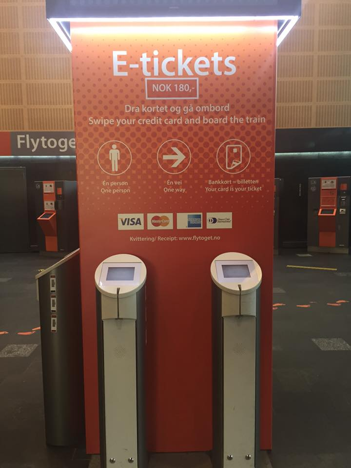
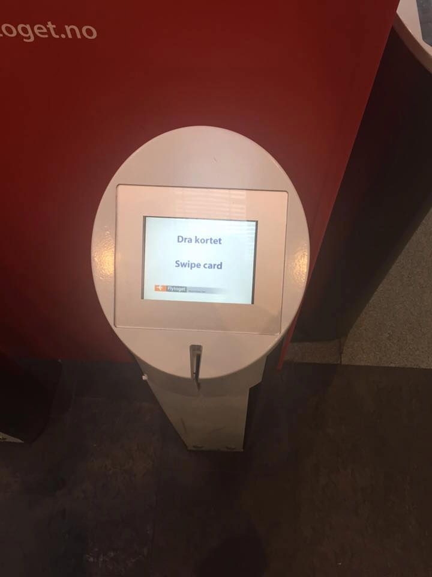
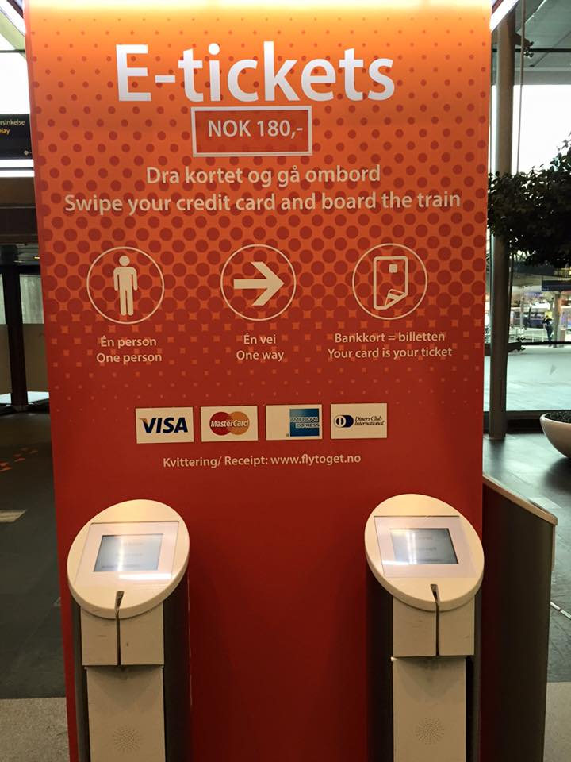

Ticket vending machine for the airport express train



Presentation of the problem and our solution
Security
The user can experience some security issues related to the e-ticket vending machine. Users want to be reassured that they can buy their tickets in a safe way. Many users are skeptical regarding security, mainly because they do not have to enter their pin code. They may end up choosing the traditional ticket machine, even though it is more complicated and more time-consuming, just to feel safe.
Other concerns regarding todays solution:
- What if the magnetic stripe on the users credit card doesn’t work? There are no other ways to pay on the e-ticket machine.
- What happens if a user swipes their card twice?
Ticket types
The e-ticket vending machine appears to give you only one ticket choice, one adult one-way-ticket to Oslo Airport Gardermoen. This would be perfect for an adult travelling alone, but what if you are not? The concept of the machine is that it’s fast and simple, and we would like to keep it that way.
At the same time, we want to reach out to more people and make it more usable.
We would like to add more ticket options, for students, seniors and children. If you fall under any of these categories, and don’t want to pay the price of an adult ticket with todays solution, you have to register your card on Flytoget’s website(sett inn link) before you go, and plot in what your correct ticket type is. This is inconvenient for the user, and difficult to know beforehand (Flytoget, s.a.).
In addition, the e-ticket machine only allows you to buy one ticket. A solution to this problem could be an opportunity to choose if you are a student or a senior before you swipe your card on the machine. In the future, we would like to see an even easier solution to this problem. This could be that the machine reads your card and are able to tell how old you are or if you are a student, and as a result decides which ticket to give you.
Application
The airport express train already has an application for smartphone(iTunes preview, s.a.), where you can find information about train schedules, ticket prices etc. We would like to add an e-ticket solution to this app, because most of the Norwegian population owns a smartphone, and many prefer to use applications for transportation tickets (Eidem and Bjørklund, 2014).
Payment
We would also like to add more payment options. As of now, you can only pay with your magnetic stripe on the e-ticket machine. If that doesn’t work, a solution could be to use your chip or the new NFC-payment solution on your credit card. Another solution is of course to pay with your phone, via the Flytoget application.
Video demonstrations
The e-ticket vending machine should have a video demonstration showing how to use the machine, to make it easier for the travelers(Flytoget, s.a.). At Oslo central station, they have several screens, which shows when the trains are scheduled to leave. In addition to having video demonstrations on the ticket machines, they should show some of the videos on the big screens. In this way, the user can watch the videos while they wait in line.
Screen
The screen of the e-ticket machine gives you very little information and for a person with reduced capabilities, it could be a problem (Sundli, 2015). We suggest a clearer sign when your payment is accepted and you are allowed to board the train. We suggest a green round figure on the screen, that says “GO” with large text. If something goes wrong in the process, there should be a large red “stop-sign” and a short note that tells the user to try again.
Some users can experience troubles with screen glare on the screens, due to a massive amount of lights placed in the ceiling over the screens, which are facing upwards on the e-ticket vending machines (Sundli, 2015).